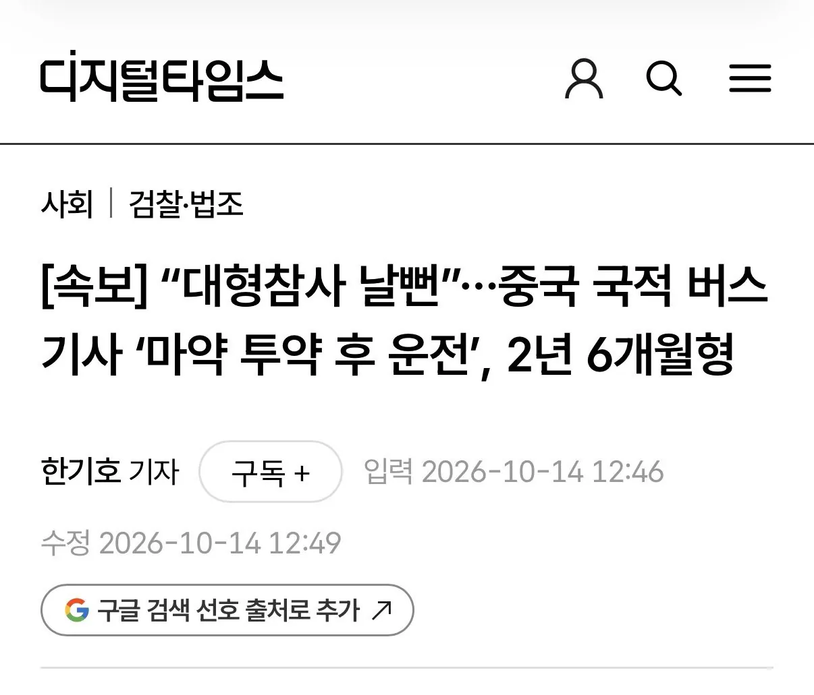
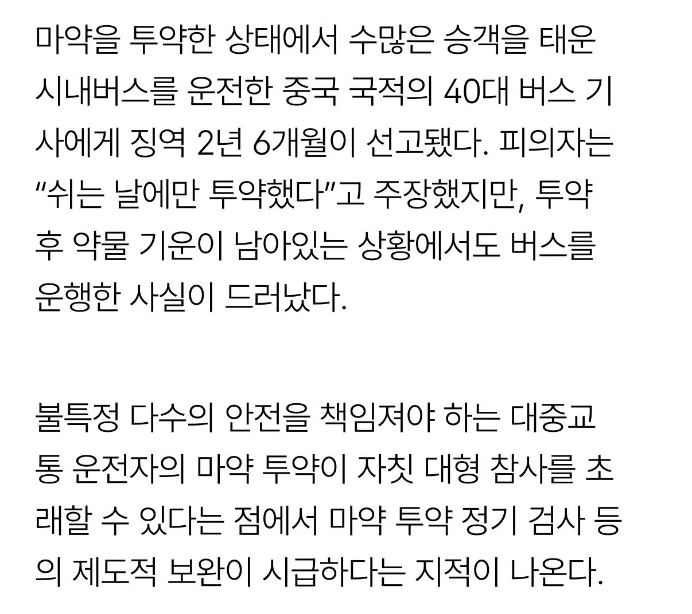
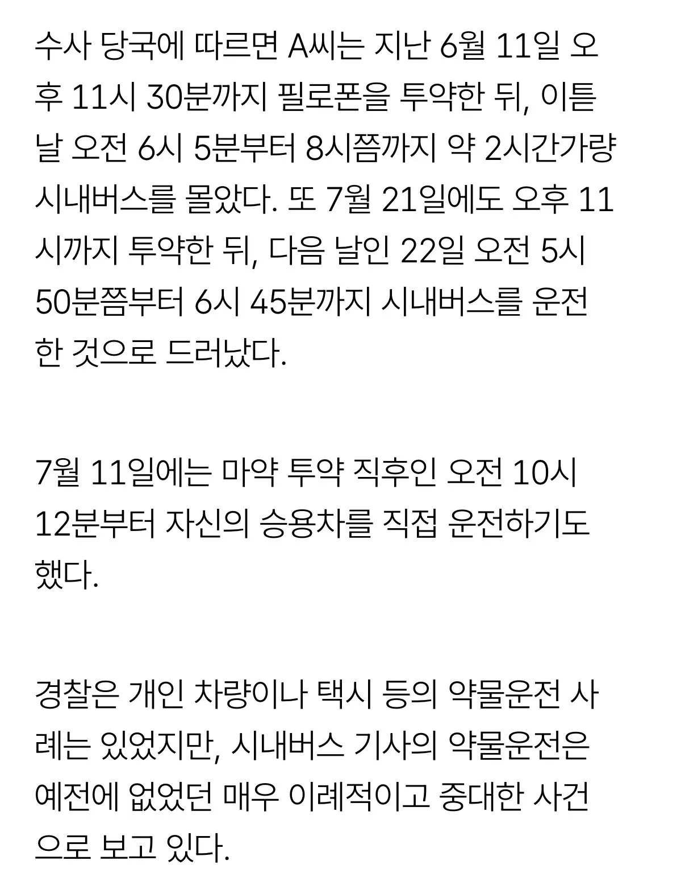

https://www.dt.co.kr/article/12089035
대형참사로 이어지기 전에 검거해서 다행...



https://www.dt.co.kr/article/12089035
대형참사로 이어지기 전에 검거해서 다행...
술이나 마리화나처럼 축 처지게 만드는거면 위험했는데 코카인 같은 각성류면 담배랑 비슷한 작용이라 그나마 다행이었을듯
필로폰은 존나 위험한데?
점점 짱.개들 졷같은뉴스가 많아지는구나 중국식민지 되어가는건가
중국국적도 버스기사가 될 수 있구나 ㅋㅋ전혀 몰랐네
우리나라에서 대형 먼허 따면 바로 취직이 가능한건가?
주요 선진국들은 외국인 버스기사 비율이 훨씬 높고 우리나라가 주요 선진국들중 최저 수준인데다 외국인이 버스기사되기 제일 깐깐한편이긴함...
근데도 저딴애들이 들어오는거...
??? : 소중국따위주제에 대중국 혐오하지마라
씨예 씨예~~~~ 씨예
아~ 무비자 좋아요~
운수업체 소속이면 일단 무비자는 아닐듯?
일단 운수업체도 같이 교육 드가자 해야할듯
중국에 보내면 사형아닌가? 마약범죄에 중국은 용서가 없던데
단순 투약은 사형이 아님
내가 알기론 유통까지 해야 사형이야
해외에서 마약 팔고 하는건 별로 안쌜껄. 중국 내에서 마약 팔아야지 사형이지.
어차피 약쟁이 새끼 중국 보내놓으면 거기서 하겠지
중국으로 보내야지
본국 송환해드리자
어쩔 수 없이 중국에 위탁해야..
마을버스나 시내버스는 fsd 하면 안되나 ?
참은 좀 쫓아냈으면
마약사범은 중국으로 인도해 주자
추방해 중국은 마약 사형이라며, 대한민국 법이 얼마나 만만하면 국내로 와서 원정 마약을하네 ㅋㅋ 한심하다
뭐야 시발 안산 짱 ㄱ ㅔ 기사도 쓰는거야?